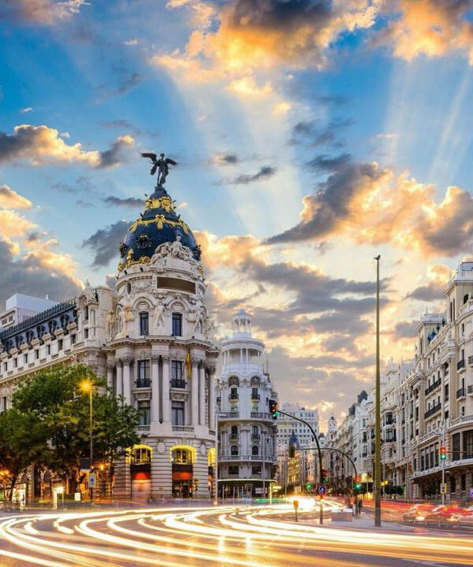

Шпанија
Шпанија (шп. España), званично Краљевина Шпанија (шп. Reino de España), је јужноевропска држава, смештена на југозападу континента на Пиринејском полуострву и неколико суседних архипелага и енклава. Граничи се са Португалијом на западу и Француском и Андором на североистоку. Излази на Средоземно море на југу и истоку и Атлантски океан на северу и северозападу, европски део Гибралтара граничи с Шпанијом. Главни град је Мадрид. У саставу Шпаније се такође налазе и два архипелага: Балеарска острва у Средоземном мору и Канарска острва у Атлантском океану. Сеута и Мелиља (две енклаве на северу афричког континента са статусом аутономних градова), као и Ливија (енклава у француским Пиринејима), такође припадају шпанској држави.
Краљевина Шпанија

Главни град:Мадрид
Службени језик:шпански
Владавина
Облик државе-уставна монархија
Краљ-Фелипе VI од Шпаније
Председник Владе-Педро Санчез
Председник Сената-Пилар Љоп
Председник Конгреса посланика-Мертисел Батет
Председник Уставног суда-Карлос Лесмес Серано